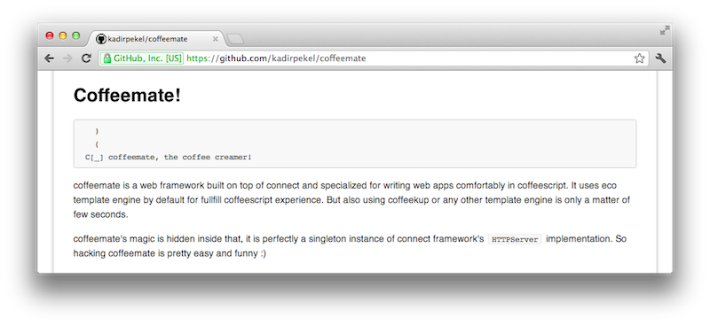

Node, Connect ve Meryl ile Web Uygulama Gelistirme
~ Kadir PekelBen Kimim?
 Kadir Pekel
Kadir Pekel
Developer / Hacker / Blogger / Father
- Blog: kadirpekel.com
- Twitter: twitter.com/kadirpekel
- Github: github.com/kadirpekel
- Linkedin: linkedin.com/kadirpekel
JavaScript ile Web Uygulamalari mi?
Yahu bu JavaScript; web sayfalarinda kayan menuler, imleci takip eden saatler, kar yagdirma efektleri vs. yapmamiza yaramiyor muydu?
Tabi ki Hayir!

JavaScript is the world's most misunderstood programming language.~ Douglas Crockford
- Her zaman oyleydi.
- Web 2.0/AJAX akimi ile beraber istemci tabanli uygulamalar JavaScript' in populeritesine ivme kazandirdi.
- Google,
V8adiyla Lars Bak' in onderliginde gelistirilen nihayet hizli bir derleyici(neden?) tanitti. - Ryan Dahl
V8motorunun uzerindeNodeadiyla, asenkron ag kabiliyetleri on planda bir standart kitaplik gelistrdi.
JavaScript gercek bir programlama dili
vs.
Peki JavaScript ile sunucu tarafli web uygulama gelistirmeyi cazip kilan nedir?


Hizli, etkin, olceklenebilir, olay tabanli ve asenkron uygulama gelistirme platformu!

var http = require('http');
var server = http.createServer(function (req, resp) {
resp.end('Hello World');
});
server.listen(3000);Javascript ile web uygulamalari yazabilirim!

Iyi ama daha fazlasina ihtiyacim yok mu?
Modern web uygulamalari gelistirebilmek icin bazi temel unsurlara ihtiyacimiz var.
- Sablonlama altyapisi (templating)
- Url yonlendirme (routing)
- Http durum yonetimi (40x, 50x http kodlari)
- Moduler yapilanma (seperation of concerns)
- Orta katman mimarisi (oturum, cerez, statik icerik vs. yonetimi)

Minimalist web framework for nodejs
Adeta bir
Camping
Flask
Slim
Sadece 230 kod satiri
$ uglifyjs -b -nm --no-seqs -ns -nc meryl.js | wc -l
233Ayaklarimizi suya sokalim.
var http = require('http');
var meryl = require('meryl');
meryl.handle('GET /', function (req, resp) {
resp.end('Hello World');
});
var server = http.createServer(meryl.cgi());
server.listen(3000);
Yonlendiriciler (Routers) ve Url Dokulari (Url Patterns)
var http = require('http');
var meryl = require('meryl');
meryl.handle('GET /', function (req, resp) {
resp.end('Hello World');
});
meryl.handle('GET /{name}', function (req, resp) {
resp.end('Hello ' + req.params.name);
});
var server = http.createServer(meryl.cgi());
server.listen(3000);Eklentiler (Plugins)
var http = require('http');
var meryl = require('meryl');
meryl.plug('*', function (req, resp, next) {
resp.setHeader('X-Server', 'Meryl');
next();
});
meryl.handle('GET /', function (req, resp) {
resp.end('Hello World');
});
meryl.handle('GET /{name}', function (req, resp) {
resp.end('Hello ' + req.params.name);
});
var server = http.createServer(meryl.cgi());
server.listen(3000);Tam olarak nasil?
next plugin > next plugin > next plugin > handler

Biraz Makyaj?
var meryl = require('meryl');
meryl.plug('*', function (req, resp, next) {
resp.setHeader('x-server', 'Meryl');
next();
});
meryl.get('/', function (req, resp) {
resp.end('Hello World');
});
meryl.get('/{name}', function (req, resp) {
resp.end('Hello ' + req.params.name);
});
meryl.run()Biraz Daha?
var meryl = require('meryl');
meryl
.plug('*', function (req, resp, next) {
resp.setHeader('x-server', 'Meryl');
next();
})
.get('/', function (req, resp) {
resp.end('Hello World');
})
.get('/{name}', function (req, resp) {
resp.end('Hello ' + req.params.name);
})
.run();Ya Sablonlar?
// server.js
meryl.get('/{name}', function (req, resp) {
resp.render('greeting', {name: req.params.name});
});
<!-- greeting.jshtml -->
<h1>Hello <%= name %></h1>
Micro-Templating
http://ejohn.org/blog/javascript-micro-templating/
Anaaam Jquery' i yazan adam degil mi o!
Micro-Templating zaten cepte, baska ne kulllanmak istersiniz?
- CoffeeKup — Markup as CoffeeScript.
- dust — Async, streaming & composable templates for the browser and node
- Eco — Embedded CoffeeScript templates
- haml.js — Faster / more compliant implementation of Haml.
- Mu (Mustache) — A Mustache engine that compiles templates into very fast rendering functions. Also streams the
- nTPL — Fast & Native extendable template system
Sanki birseyler eksik gibi?
Kararli ve guclu bir orta katman

Nasil?
var meryl = require('meryl');
var connect = require('connect');
meryl.plug(connect.logger());
meryl.plug(connect.static(__dirname));
meryl.get('/', function (req, resp) {
resp.end('<img src="meryl.png" />');
});
meryl.run();
Connect' in sagladigi katmanlar
- logger request logger with custom format support
- csrf Cross-site request forgery protection
- compress Gzip compression middleware
- basicAuth basic http authentication
- bodyParser extensible request body parser
- json application/json parser
- multipart multipart/form-data parser
- cookieParser cookie parser
- session session management support with bundled MemoryStore
- static streaming static file server supporting
Rangeand more - directory directory listing middleware
- query automatic querystring parser, populating
req.query - more ...
Kucuk bir uygulama
var meryl = require('../../index'),
connect = require('connect');
var twinkles = ['My first wink', 'Lets twinkle again!'];
meryl
.plug(
connect.logger(),
connect.static(__dirname + '/public'),
connect.bodyParser()
)
.get('/', function (req, resp) {
resp.render('index', {twinkles: twinkles});
})
.post('/newwink', function (req, resp) {
twinkles.push(req.body.wink);
resp.redirect('/');
})
.run({templateDir: 'views'});
Daha ozellikli alternatifler
Bana biraz destek olur musun abi?
Kahve Molasi
Neye benziyor?
# Require it
mate = require 'coffeemate'
# Connect it
mate.logger()
mate.static("#{__dirname}/public")
# Extend it
mate.context.highlight = (color, txt) ->
"#{txt}"
# Route it
mate.get '/greet/:name', ->
# this is context variable
@greet_msg = "Hello, #{@req.params.name}"
@render 'main'
# Remote it
mate.now.greet = ->
console.log 'Hello, World!'
# Listen it
mate.listen 3000